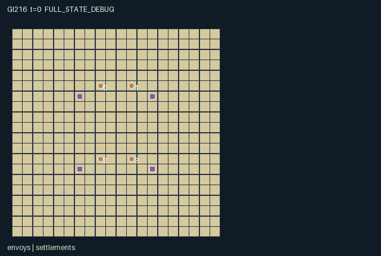

GI216 / SPATIAL
洪原议会 · Floodplain Council
协调四村粮木、道路与防洪设施，同时保留各村利益。
Original saved demonstration
Recorded native state, often authored scripts or interventions; information scope and failures are preserved in the original provenance. This is a saved demonstration, not live browser play.

Release verification episode
Untrained uniform legal actions. Actual JAX state sampled along the full original episode; full-state debug camera. No human performance or learning claim.

Run this game
crucibles play --game 216
Start Python locally, then open the address printed by the terminal. Installation, multiplayer, takeover and keyboard controls →
Objective, rewards & ending
Exact task contract
{
"objective": "Maintain and trade between four settlements while choosing resource investments, levee/culvert routing, raised roads and shared flood responses during a persistent 20x20 interaction window.",
"natural_termination": "No single settlement quest ends this persistent strategy world. terminated remains false and tick 384 truncates; harvest, trade, construction and flood losses never reset the state.",
"interaction": "Levees and closed culverts divert physical packets toward neighboring fields. Roads allow deep-water crossings and faster hauling but degrade in severe water. Grain trade and material gifts change other settlements' future construction/food options; dated reports require physical inspection or adjacent transfer.",
"observation_access": "Public information consists of clock/terminal causes, rain, aggregate flood-alert count, settlement coordinates and fixed food valuations. Each worker sees map cells, peers and water packets within Manhattan radius four; hidden map/entity records are -1 with a visibility bit. Own settlement stores/field water are continuously available as its explicit home telemetry; other settlement contents require local visibility. Each actor additionally sees its own dated report memory and six reward components. Public safety rewards and the alerts counter reveal only the aggregate exposed-settlement count, not remote identities or crop/store values. The scene map uses the actual map_visible mask."
}Declared per-step reward bounds: -4 to 14. Observability: partially_observable.
Rules
- Four settlements own separate stone, timber and grain stores. A worker carries at most four resource units.
- A levee costs two stone; a raised road costs two timber. Convert a levee into a controllable culvert using one of each.
- Water packets move south every second tick. A closed barrier sends them outward sideways, or holds them if that exit is blocked.
- Deep water blocks ordinary movement. Raised roads allow crossing and two-cell hauling, but depth three damages them on periodic pulses.
- Field wetness is the maximum capped depth within two cells of a settlement. Deep exposure loses grain and crops.
- Depositing foreign grain pays trade value and benefits the recipient; harvesting another field removes its actual grain.
- Local reports preserve their observation dates when handed to a neighboring worker. Remote current water is not revealed by old reports.
- Public aggregate flood alerts and distinct food valuations coexist with private stores and local views. The world truncates at 384.
Original mechanism document (historical status wording retained)
# Floodplain Council AUTHORED_NOT_EXECUTED. Current initial attempt 00. Requested author gpt-6-astra / max; provider measured model, effort, tokens, elapsed time and cost are unknown. The square floodplain has four settlements with independent bounded stores and physical field regions of Manhattan radius two. Each worker starts with a small material load and a distinct home food valuation. A backpack carries four units total. Resource withdrawal requires the owner's home, while deposits can reach any adjacent settlement; transfers to a peer require adjacency. Harvesting and grain trade are repeatable choices rather than a compulsory global quest. At most 32 physical water packets enter from north-edge columns that sweep across the floodplain. Rain increases arrivals. Existing packets advance south every second tick; an encountered levee/closed culvert diverts them outward from the center, and a blocked side holds them. Packets leaving the finite map deactivate. A native per-cell depth class counts colocated packets and saturates at four. Levees can therefore protect one approach while diverting water into a neighboring field. Opening a culvert releases its flow path and restores walking access. Raised roads allow movement in deep cells and two-cell hauling, but periodic deep exposure reduces their durability and can erase them. Construction, conversion, dismantling and repair all modify the actual front cell. Field grain grows on periodic safe pulses; flooded fields lose crop and stored grain. A road builder receives a small utility payment when another worker actually enters its road. Foreign grain deposits benefit both trader and recipient, while field harvesting by another worker imposes an explicit local opportunity cost. Workers may protect, reroute, repair, trade, gift material, wait for water to pass or exchange dated observations. These competing responses are source hypotheses, not measured strategies. ## Native roles, controls and observations A/O/U/H = (4, 3001, 24, 384). U=24 combines directional construction, three withdrawal resources, material selection/gifts, gates, repair/dismantling, road hauling, harvest/trade and dated report exchange. Four owners have distinct stores and valuations. Human and AI controllers use exactly the same scalar int32 joint-action interface and native state transition. The shared platform can assign any subset of roles to humans. No separate browser dynamics are provided. Public information consists of clock/terminal causes, rain, aggregate flood-alert count, settlement coordinates and fixed food valuations. Each worker sees map cells, peers and water packets within Manhattan radius four; hidden map/entity records are -1 with a visibility bit. Own settlement stores/field water are continuously available as its explicit home telemetry; other settlement contents require local visibility. Each actor additionally sees its own dated report memory and six reward components. Public safety rewards and the alerts counter reveal only the aggregate exposed-settlement count, not remote identities or crop/store values. The scene map uses the actual map_visible mask. 0: Wait. 1: Walk north and face north. 2: Walk east and face east. 3: Walk south and face south. 4: Walk west and face west. 5: Withdraw one stone from own home; pack capacity four total. 6: Withdraw one timber from own home. 7: Withdraw one grain from own home. 8: Deposit carried resources at adjacent settlement; foreign grain counts as trade. 9: Build levee on front empty cell for two stone. 10: Build raised road on front empty cell for two timber. 11: Convert front levee into open culvert for one stone and one timber. 12: Open or close front culvert. 13: Dismantle front structure; recover one appropriate material. 14: Repair front damaged road with one timber. 15: Harvest one grain from adjacent settlement field. 16: Haul two cells north along existing raised roads. 17: Haul two cells east along existing raised roads. 18: Haul two cells south along existing raised roads. 19: Haul two cells west along existing raised roads. 20: Give one selected resource to lowest-index adjacent peer. 21: Cycle selected resource: stone, timber, grain. 22: Record dated water reports from locally visible settlements and own telemetry. 23: Hand latest stored reports to lowest-index adjacent peer. ## Resolution, reward and time Invalid/mask-false commands become wait. Moves reject start-occupied and duplicate destinations; a two-cell haul also rejects a start-occupied intermediate cell. A haul is one native movement command along two raised-road cells. Sequential interactions rotate by (t+k) mod 4; eligible home/peer ties use lowest index. Construction precedes packet routing, then crop/flood consequences and visibility refresh. Reports are stamped with the pre-flow source clock and are never refreshed merely by transmission. Six native components are: trader +2 per foreign grain deposited; recipient +0.2*its food priority per imported grain and harvester +0.4*its priority per unit; shared +0.05 per unexposed settlement on each eight-tick safety pulse; builder -0.2 per consumed construction/repair resource; owner -priority per flood-lost stored grain and -0.15 per grain harvested from its field by another actor; road owner +0.1 per peer entry onto its road. A backpack holds four, there are four workers and at most one flood loss per home on a pulse. Own trade at most 8, remote imports at most 3.84, shared safety at most 0.2 and road entries at most 0.3 give a conservative upper bound below 14. Building/flood/foreign-harvest costs stay above -4. Components are native float32 state, with no zero-sum assumption. No single settlement quest ends this persistent strategy world. terminated remains false and tick 384 truncates; harvest, trade, construction and flood losses never reset the state. Natural causes take priority over H, and already-terminal input is absorbing: unchanged state/observation/clock, zero reward and preserved terminal causes. Raw transitions never reset. Construction consumes real carried stone/timber; dismantling recovers one unit and cannot duplicate the original investment. Stores cap at twenty per resource and backpacks at four total. Grain regrowth and river inflow/outflow are explicit autonomous sources/sinks. Packet count is capped at 32, and depth is a capped class rather than an unbounded volume claim. Reports retain original timestamps. ## Literal source evidence candidate.py:L78: deposited=jnp.where((a==8)&jnp.any(near),jnp.minimum(bag,20-n['stores'][home]),jnp.zeros((3,),jnp.int32)) candidate.py:L84: levee=(a==9)&inside&(old==0)&~occupied&(bag[0]>=2) candidate.py:L86: culvert=(a==11)&inside&(old==1)&(bag[0]>=1)&(bag[1]>=1) candidate.py:L97: n['gate_open']=n['gate_open'].at[f[1],f[0]].set(jnp.where(culvert,True,n['gate_open'][f[1],f[0]]^toggle)&(new==3)) candidate.py:L110: send=(a==23)&jnp.any(peers)&(n['report_tick'][i]>n['report_tick'][peer]) candidate.py:L119: proposed=jnp.where(dam[:,None],jnp.where(sideblock[:,None],wp,side),down) candidate.py:L127: n['depth']=jnp.zeros((20,20),jnp.int32).at[n['water_pos'][:,1],n['water_pos'][:,0]].add(n['water_active'].astype(jnp.int32));n['depth']=jnp.minimum(4,n['depth']) candidate.py:L133: n['home_water']=jnp.max(jnp.where(field,n['depth'][None,:,:],0),axis=(1,2)).astype(jnp.int32) candidate.py:L138: n['reward_parts']=n['reward_parts'].at[:,2].set(jnp.where(s['t']%8==7,0.05*(4-n['alerts']),0.0)).at[:,4].add(-n['priority']*loss.astype(jnp.float32)) candidate.py:L140: n['t']=s['t']+1;n['rain']=(n['t']%32)<12;n['terminated']=jnp.array(False);n['truncated']=n['t']>=self.max_steps;n['done']=n['truncated'] ## Presentation and evidence boundary Parchment ground, muted settlement flags, blue water packets and native colored levee/road/culvert tiles. Terrain and infrastructure are the actual masked cell state, not an invented hex board. All scene geometry, entity attributes and visibility refer to declared native leaves. Public scene events are restricted to actually public information. Debug/full-state view must be separate from role view. Two literal scripts and a single actor/action paired hypothesis are supplied, with fixed integer seed and source-derived suffix lengths. All remain UNEXECUTED_AUTHOR_HYPOTHESIS; neither legality of the full trajectory nor any effect, solvability, strategic richness, learning or transfer is certified. Prospective variation could examine rain routing, material stores, settlement valuations, road durability or report-sharing conventions under a separate prospective source. No such variation or candidate has been run. Current author checks use stdlib AST/literal shape arithmetic, byte hashes and the supplied trusted manifest/scene/whitelist validators only. No candidate/JAX/NumPy import, native method call, numerical rollout, rendering, training, network/model call or seed search occurred. Four official README excerpts supplied API context only: JaxMARL parallel dictionaries, Pgx explicit-key and terminal interfaces, Craftax spatial game framing, PureJaxRL single-file implementation philosophy. No upstream implementation, layout or asset was copied. The supplied PPO implementation was not read. Exact current input paths, bytes, hashes and excerpt extents are recorded in author_input_freeze.json. Current diversity addendum controls A/H and the scope of open worlds.
Commands
Roles & abilities
agent_0 Northwest settlement; food priority 1.0
agent_1 Northeast settlement; food priority 1.3
agent_2 Southwest settlement; food priority 0.8
agent_3 Southeast settlement; food priority 1.6
Observation permissions
Training receives only the original observation rows. Role cameras use declared visibility; debug cameras are explicitly marked. Local benchmark records log debug exposure and role takeover history.
Exact observation layout
[
{
"slice": [
0,
1
],
"meaning": "t; exact native row-major state values",
"visibility": "public"
},
{
"slice": [
1,
2
],
"meaning": "done; exact native row-major state values",
"visibility": "public"
},
{
"slice": [
2,
3
],
"meaning": "terminated; exact native row-major state values",
"visibility": "public"
},
{
"slice": [
3,
4
],
"meaning": "truncated; exact native row-major state values",
"visibility": "public"
},
{
"slice": [
4,
5
],
"meaning": "Public periodic upstream input state; rain for first twelve ticks of each thirty-two-tick cycle",
"visibility": "public"
},
{
"slice": [
5,
6
],
"meaning": "Public aggregate count of flood-exposed settlements; no identities or remote current cell depths",
"visibility": "public"
},
{
"slice": [
6,
14
],
"meaning": "Four public home coordinates: northwest, northeast, southwest, southeast",
"visibility": "public"
},
{
"slice": [
14,
18
],
"meaning": "Public distinct settlement food valuations [1.0,1.3,0.8,1.6]",
"visibility": "public"
},
{
"slice": [
18,
41
],
"meaning": "Self: actor id, backpack[3], selected resource, own stores[3], priority, remembered water[4], original report ticks[4], reward components[6]",
"visibility": "self"
},
{
"slice": [
41,
2841
],
"meaning": "400 local cell records in y,x order: visible, terrain, capped depth, structure kind, durability, builder, gate-open; hidden values -1",
"visibility": "local"
},
{
"slice": [
2841,
2873
],
"meaning": "Four local worker records: visible, x,y, backpack[3], selected resource, facing; hidden values -1",
"visibility": "local"
},
{
"slice": [
2873,
2905
],
"meaning": "Four settlement records: visible, x,y, stores[3], crop, field water; own telemetry always visible, others require radius four",
"visibility": "local"
},
{
"slice": [
2905,
3001
],
"meaning": "32 water packet records: visible,x,y; inactive or out-of-radius values -1",
"visibility": "local"
}
]Entity visibility & attributes
[
{
"id": "envoys",
"kind": "agent",
"count": 4,
"position": [
"agent_pos"
],
"active": [
"agent_active"
],
"visibility": [
"agent_visible"
],
"attributes": [
{
"state_path": [
"facing"
],
"meaning": "Facing 1 north, 2 east, 3 south, 4 west",
"display": "direction"
},
{
"state_path": [
"backpack"
],
"meaning": "Carried stone, timber, grain; total capacity four",
"display": "number"
},
{
"state_path": [
"selected"
],
"meaning": "Selected transfer resource 0..2",
"display": "category"
}
]
},
{
"id": "settlements",
"kind": "landmark",
"count": 4,
"position": [
"home_pos"
],
"active": [
"home_active"
],
"visibility": [
"home_visible"
],
"attributes": [
{
"state_path": [
"stores"
],
"meaning": "Settlement stone, timber, grain stores; each 0..20",
"display": "number"
},
{
"state_path": [
"crop"
],
"meaning": "Harvestable field grain, 0..6",
"display": "bar"
},
{
"state_path": [
"home_water"
],
"meaning": "Maximum capped depth class within field radius two",
"display": "number"
}
]
},
{
"id": "floodwater",
"kind": "hazard",
"count": 32,
"position": [
"water_pos"
],
"active": [
"water_active"
],
"visibility": [
"water_visible"
],
"attributes": []
}
]Actual verification & provenance
Per-game execution receipt
{
"game": "gi216",
"status": "PASS",
"verification_revision": 2,
"source_sha256": "3820414daa8875d3a3a3285f82ae101efcbaa38e304b8cd297db77b1dbe68d2f",
"seed": 20261101,
"runtime": {
"jax": "0.4.38",
"numpy": "1.26.4",
"devices": [
"TFRT_CPU_0"
]
},
"dimensions": {
"num_agents": 4,
"observation_size": 3001,
"num_actions": 24,
"max_steps": 384
},
"checks": {
"eager_reset": {
"status": "PASS",
"seconds": 2.860499382019043
},
"observation_spaces_legal_masks": {
"status": "PASS",
"seconds": 3.1318020820617676
},
"eager_step": {
"status": "PASS",
"seconds": 3.814972162246704
},
"jit_reset": {
"status": "PASS",
"seconds": 0.19737029075622559
},
"jit_step": {
"status": "PASS",
"seconds": 4.537660360336304
},
"eager_jit_integer_parity_float_measurement": {
"status": "PASS",
"seconds": 0.0010404586791992188
},
"jit_vmap_reset": {
"status": "PASS",
"seconds": 0.4519960880279541
},
"jit_vmap_step": {
"status": "PASS",
"seconds": 6.260425329208374
},
"outer_autoreset_api": {
"status": "PASS",
"seconds": 5.66972017288208
},
"full_original_horizon_episode_and_render": {
"status": "PASS",
"seconds": 2.0559539794921875
}
},
"human_scores": null,
"browser_controls": "PENDING",
"failures": [],
"elapsed_seconds": 29.788907289505005,
"float_parity_max_abs": 0.0,
"numerical_parity": "EXACT",
"raw_terminal_absorbing": "PASS",
"terminal_outer_reset": "PASS",
"episode_steps": 384,
"scripted_random_returns": [
-0.9499998614192009,
-2.94999947398901,
-0.5399996861815453,
-4.71000000089407
],
"terminal": true,
"demo_information": "FULL_STATE_DEBUG",
"demo_frames": 25,
"render_roles_checked": 4
}Chromium control verification
{
"status": "PENDING"
}Original identity and file hashes
{
"id": 216,
"key": "gi216",
"title": "洪原议会 · Floodplain Council",
"summary": "协调四村粮木、道路与防洪设施，同时保留各村利益。",
"tags": [
"领土策略",
"4角色"
],
"family": "spatial",
"dimensions": {
"num_agents": 4,
"observation_size": 3001,
"num_actions": 24,
"max_steps": 384
},
"source_sha256": "3820414daa8875d3a3a3285f82ae101efcbaa38e304b8cd297db77b1dbe68d2f",
"manifest_sha256": "31fbbcf4545a1afdc81b4a8bdf9f0eb52f78998eec984b1984f866d41491a4a1",
"files": [
{
"file": "candidate.py",
"sha256": "3820414daa8875d3a3a3285f82ae101efcbaa38e304b8cd297db77b1dbe68d2f",
"bytes": 13414,
"origin": "work/exp_2/game_incubator_v3/community_games222_225_visualization_root222_v1/native154_candidate/registry/v2/games/game-v3-00216/candidate.py"
},
{
"file": "manifest.json",
"sha256": "31fbbcf4545a1afdc81b4a8bdf9f0eb52f78998eec984b1984f866d41491a4a1",
"bytes": 15825,
"origin": "work/exp_2/game_incubator_v3/community_games222_225_visualization_root222_v1/native154_candidate/registry/v2/games/game-v3-00216/manifest.json"
},
{
"file": "scene.json",
"sha256": "cdfea1f1cd9f381d3906d6fec47b4f2c37d3b5e242c39a9197080e8992b0c0f2",
"bytes": 9041,
"origin": "work/exp_2/game_incubator_v3/community_games222_225_visualization_root222_v1/native154_candidate/registry/v2/games/game-v3-00216/scene.json"
},
{
"file": "mechanism.md",
"sha256": "d58927870e961b4b264a78a161f72f14b1f5a135ba5ec81aad7a810bc4dcfb3b",
"bytes": 9436,
"origin": "work/exp_2/game_incubator_v3/community_games222_225_visualization_root222_v1/native154_candidate/registry/v2/games/game-v3-00216/mechanism.md"
},
{
"file": "playthrough.json",
"sha256": "46f7dff89727e82bbc0ecc62720b6ba3a51c134dcd443d5c97581e2333e43d5c",
"bytes": 6399,
"origin": "work/exp_2/game_incubator_v3/community_games222_225_visualization_root222_v1/native154_candidate/registry/v2/games/game-v3-00216/playthrough.json"
}
],
"original_status": "NATIVE154_REFERENCE",
"original_saved_replay": true,
"release_validation": "PASS",
"human_scores": null,
"browser_validation": "PENDING"
}